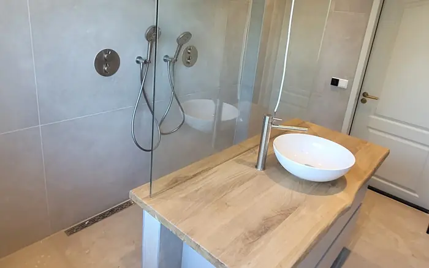
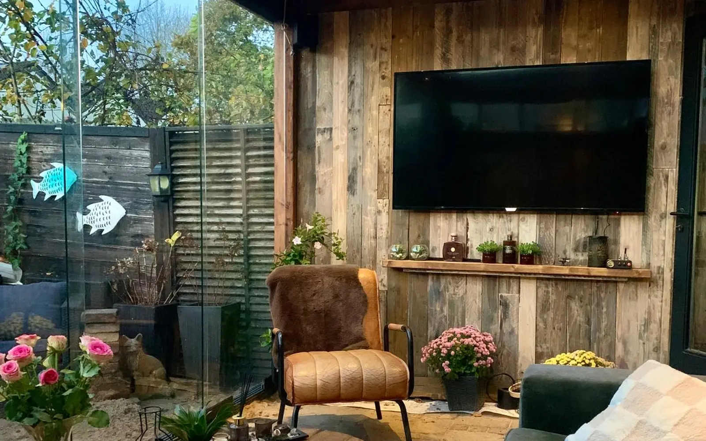

Renovatie en onderhoud
Timmerwerk, keuken en badkamer, kozijnen en deuren, bouwkundig herstel.

Renovatie en onderhoud · Houtbewerking op maat · Latex spuiten · Zonwering
Van een nieuwe deur tot een complete zolder: één aanspreekpunt voor montage, afbouw en onderhoud.
Ma t/m vr 07:00 tot 18:00, za 08:00 tot 16:00.
Eigen foto's van Reuz, van tuinkamer tot spoedklus met de kraan.
Bekijk alle projecten →
Drie groepen werk, één aanspreekpunt.

Timmerwerk, keuken en badkamer, kozijnen en deuren, bouwkundig herstel.

Inbouwkasten en meubels, overkappingen, traprenovatie en latex spuiten.

Screens, rolluiken, binnenzonwering, markiezen en shutters op maat.
"Wij zijn ontzettend tevreden over Reuz Montage & Afbouw. Zij hebben bij ons de wc en keuken aangepakt en daarnaast het volledige schilderwerk in huis gedaan. Alles is met veel vakmanschap en oog voor detail uitgevoerd. Ze werken netjes, denken oplossingsgericht mee en komen hun afspraken na. Absoluut een aanrader"
"Tjerk is een uitzonderlijk vakman die overal een oplossing voor heeft. Hij denkt vooruit, werkt efficiënt en levert altijd topkwaliteit. Het resultaat overtreft elke keer weer mijn verwachtingen."
Vertel wat er moet gebeuren. Reuz denkt mee over de beste aanpak.